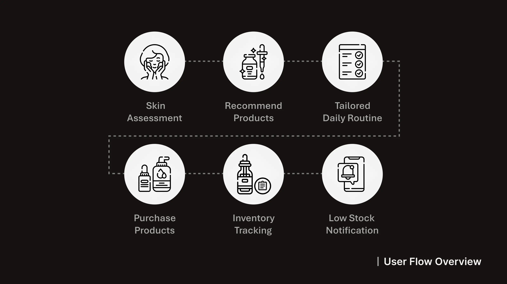
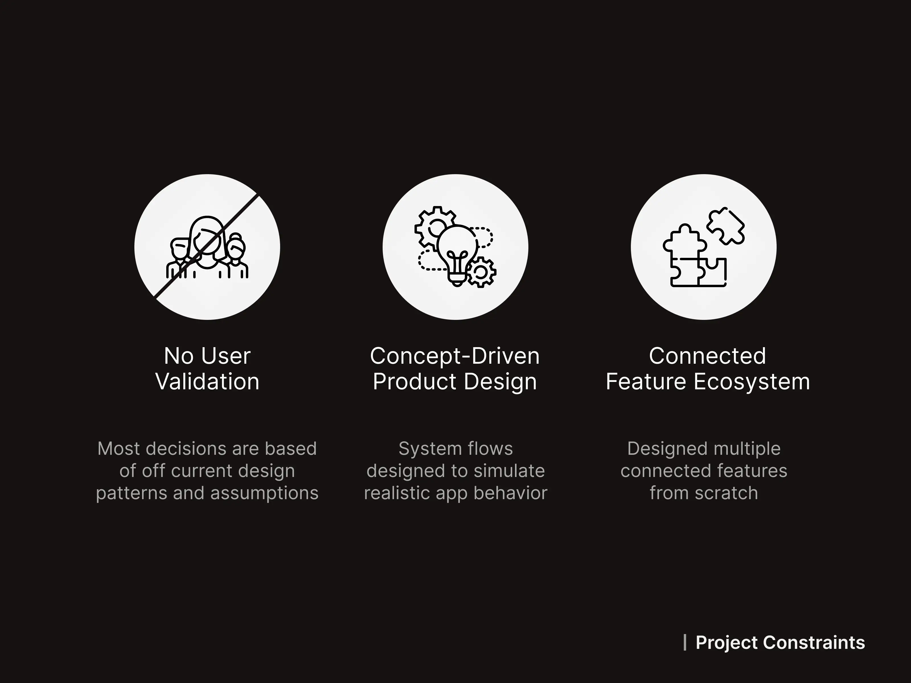
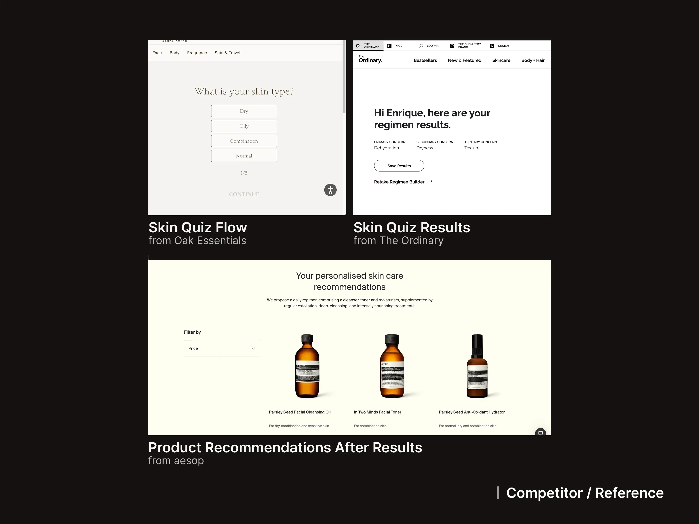
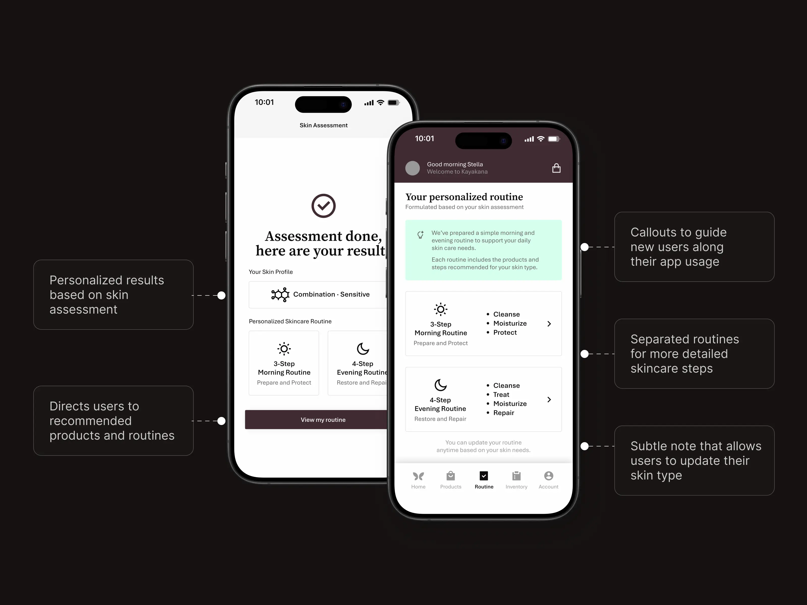
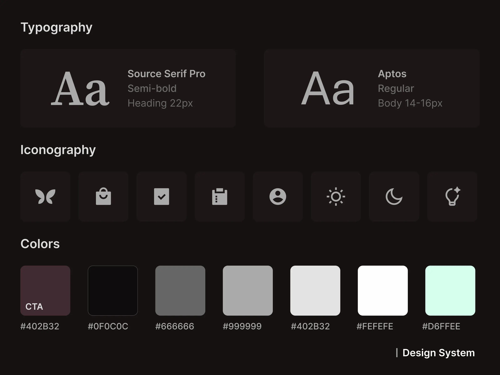
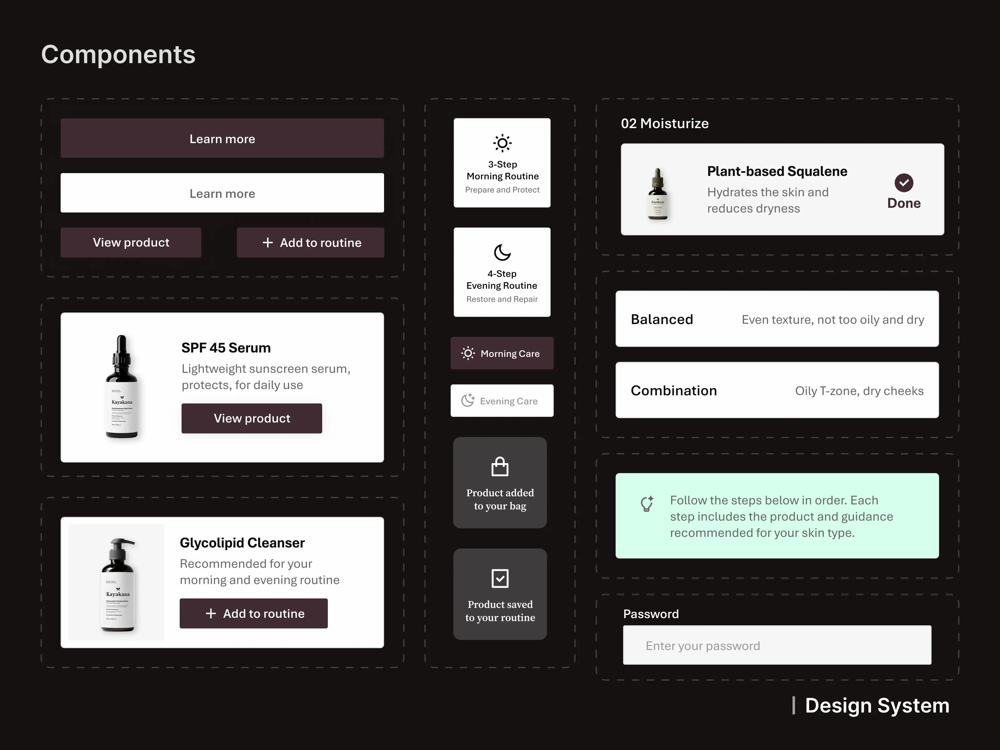
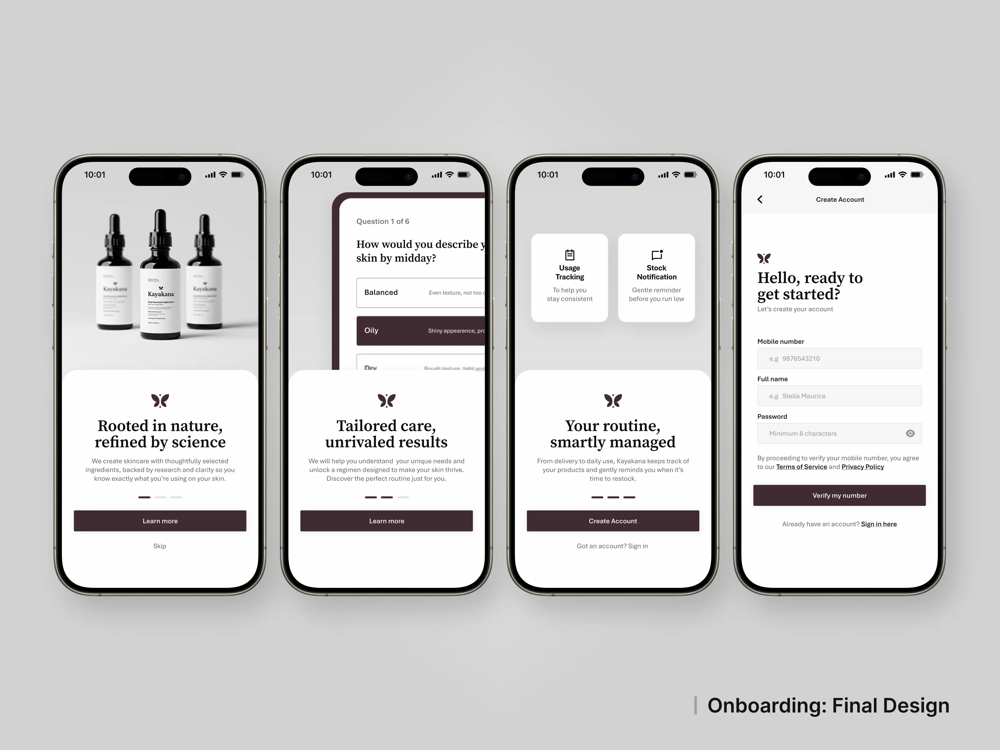
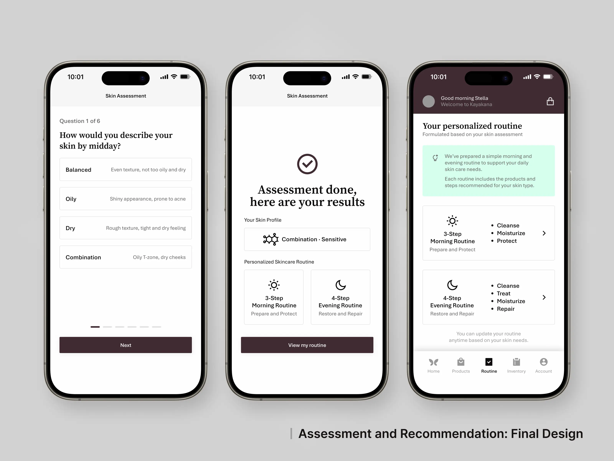
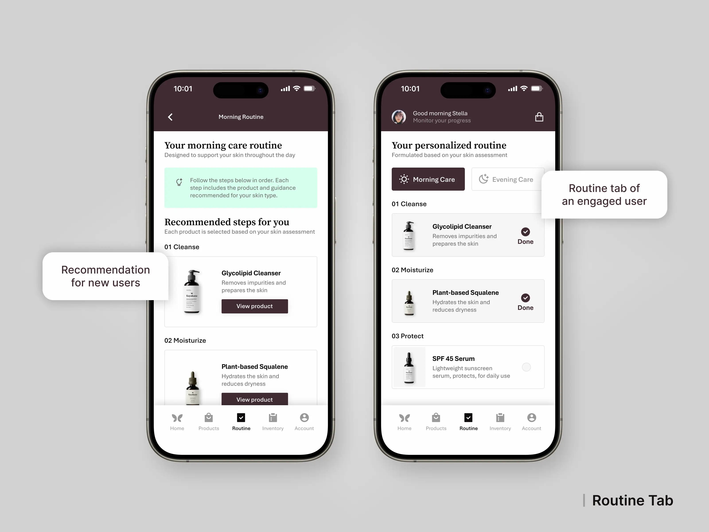
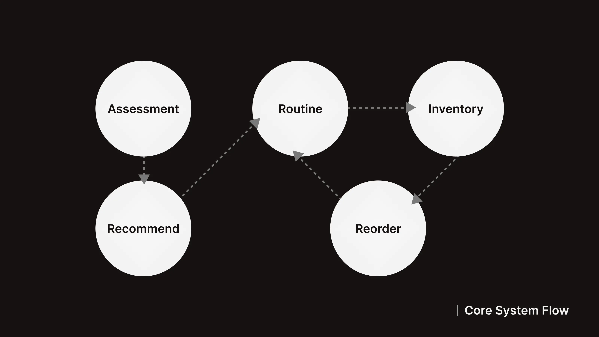

Concept Project
Mobile App UI/UX Design

01. Project Overview
Designed a mobile app concept for a skincare brand focused on guiding users
through personalized routines and product
usage. The project explores how assessment-based recommendations, routine tracking and inventory
management can be combined into a single, cohesive experience.
- Role: UI/UX Designer (Concept Project)
- Scope: End-to-End Mobile App Design
- Tools: Figma, Photopea
02. Problem & Goals

Many skincare purchases are driven by trends or promotions rather than actual user needs, leading to inconsistent routines and unused products. The goal was to design an experience that guides users through personalized product selection, encourages consistent routines and supports long-term usage through tracking and reminders.
03. Constraints & Challenges

As a self-initiated concept project, there were no real users or validated data, requiring assumptions based on research and existing patterns. Designing a system that connects assessment, recommendations, routines and inventory introduced complexity in structuring user flows and maintaining consistency across screens.
04. Research & Insights

Reviewed local and international skincare brands, including The Ordinary, Aesop, and Oak Essentials, focusing on how they guide users in identifying skin types and recommending products. Many platforms rely on simple questionnaires and product suggestions, but lack features that support long-term routines and product usage, highlighting an opportunity to extend the experience beyond initial purchase.
05. Design Exploration

Explored multiple layout directions during the early stages, focusing on how to structure key features such as assessment, product recommendations and routine tracking. Once a clear visual direction was established, the design was refined and expanded across the app, ensuring consistency while connecting features into a cohesive user flow.
06. Key Design Decisions
-
Guided Skin Assessment
Introduced an onboarding flow to identify user skin type and personalize recommendations. -
Personalized Product Recommendations
Suggested products and routines based on assessment results to encourage intentional purchases. -
Routine-Based Experience
Structured the app around morning and evening routines to support consistency and habit formation. -
Inventory Tracking System
Allowed users to monitor product usage and receive reminders when stock is low. -
Connected User Flow
Designed features to work as a continuous loop, from assessment to reorder, creating a cohesive experience.

07. Implementation Considerations

The interface was built using reusable components and consistent styles in Figma to maintain visual consistency across the app. Design decisions focused on creating modular layouts and repeatable patterns, allowing the concept to scale if developed into a real product.

08. Final Design
The final design brings together assessment, recommendations, routines and inventory into a single, connected experience.The interface focuses on clarity and consistency, allowing users to easily move between discovering products, following routines and tracking usage.



09. Outcome

This project resulted in a complete mobile app concept that demonstrates how skincare brands can support users beyond product purchase through guided routines and usage tracking. It also highlights how combining multiple features into a structured flow can create a more engaging and consistent user experience.
10. Learnings
-
Design Systems Improve Consistency
Using reusable components helped maintain visual consistency across multiple screens. -
User Flows Define the Experience
Planning flows early made it easier to connect features and avoid confusion during design.
Other Works

Freelance Project | UI/UX Redesign
Website Refresh: Modernized a corporate website to improve usability, navigation and client conversion
Explore Project
Personal Project | Web Design & Development
Designed and built a responsive portfolio from scratch that combines UI design with front-end implementation
Explore Project